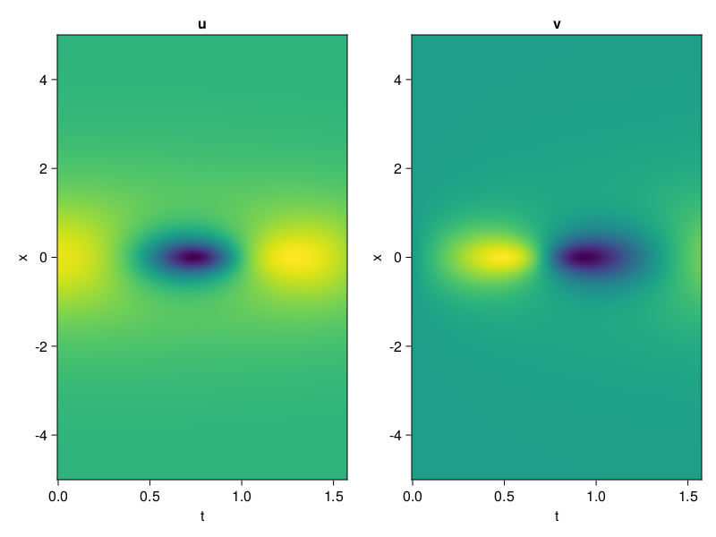
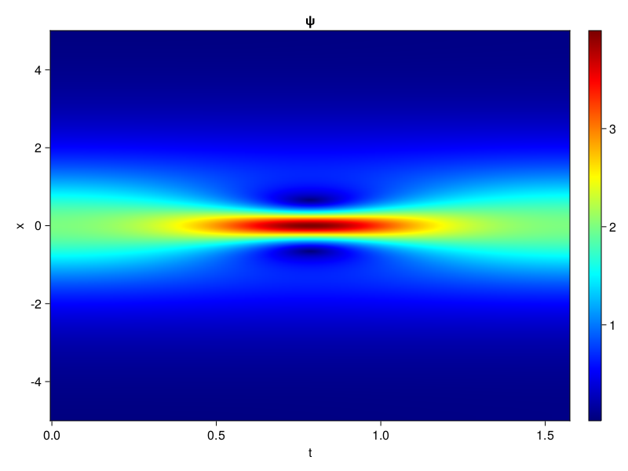
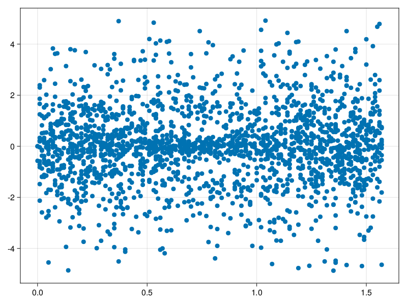

Schrödinger equation
The nonlinear Shrödinger equation is given by
\[\mathrm{i} \partial_t \psi=-\frac{1}{2} \sigma \partial_{x x} \psi-\beta|\psi|^2 \psi\]
Let $\sigma=\beta=1, \psi=u+v i$, the equation can be transformed into a system of partial differential equations
using ModelingToolkit, IntervalSets, Sophon, CairoMakie
using Optimization, OptimizationOptimJL
@parameters x,t
@variables u(..), v(..)
Dₜ = Differential(t)
Dₓ² = Differential(x)^2
eqs=[Dₜ(u(x,t)) ~ -Dₓ²(v(x,t))/2 - (abs2(v(x,t)) + abs2(u(x,t))) * v(x,t),
Dₜ(v(x,t)) ~ Dₓ²(u(x,t))/2 + (abs2(v(x,t)) + abs2(u(x,t))) * u(x,t)]
bcs = [u(x, 0.0) ~ 2sech(x),
v(x, 0.0) ~ 0.0,
u(-5.0, t) ~ u(5.0, t),
v(-5.0, t) ~ v(5.0, t)]
domains = [x ∈ Interval(-5.0, 5.0),
t ∈ Interval(0.0, π/2)]
@named pde_system = PDESystem(eqs, bcs, domains, [x,t], [u(x,t),v(x,t)])\[ \begin{align} \frac{\mathrm{d}}{\mathrm{d}t} u\left( x, t \right) =& - \frac{1}{2} \frac{\mathrm{d}^{2}}{\mathrm{d}x^{2}} v\left( x, t \right) - \left( \left|u\left( x, t \right)\right|^{2} + \left|v\left( x, t \right)\right|^{2} \right) v\left( x, t \right) \\ \frac{\mathrm{d}}{\mathrm{d}t} v\left( x, t \right) =& \frac{1}{2} \frac{\mathrm{d}^{2}}{\mathrm{d}x^{2}} u\left( x, t \right) + \left( \left|u\left( x, t \right)\right|^{2} + \left|v\left( x, t \right)\right|^{2} \right) u\left( x, t \right) \end{align} \]
pinn = PINN(u= Siren(2,1; hidden_dims=16,num_layers=4, omega = 1.0),
v= Siren(2,1; hidden_dims=16,num_layers=4, omega = 1.0))
sampler = QuasiRandomSampler(2000, (500,500,20,20))
strategy = NonAdaptiveTraining(1,(10,10,1,1))
prob = Sophon.discretize(pde_system, pinn, sampler, strategy)OptimizationProblem. In-place: true
u0: ComponentVector{Float64}(u = (layer_1 = (weight = [-0.20043200254440308 0.0037330985069274902; -0.49174416065216064 0.11456823348999023; … ; 0.14890748262405396 -0.13444387912750244; 0.18858963251113892 0.2307525873184204], bias = [0.0; 0.0; … ; 0.0; 0.0;;]), layer_2 = (weight = [-0.14633558690547943 -0.12697944045066833 … -0.3223791718482971 -0.2561306357383728; -0.5973944067955017 0.22531692683696747 … -0.11148764193058014 -0.16749200224876404; … ; 0.01368313655257225 -0.06338025629520416 … 0.4466715455055237 -0.27969592809677124; 0.10328852385282516 0.21443358063697815 … -0.5013596415519714 0.29133424162864685], bias = [0.0; 0.0; … ; 0.0; 0.0;;]), layer_3 = (weight = [0.5889860987663269 0.5897536277770996 … -0.13777008652687073 -0.4479673504829407; 0.21419771015644073 -0.2697547972202301 … -0.22006571292877197 -0.046670448035001755; … ; -0.6031245589256287 -0.36736834049224854 … 0.3126087188720703 -0.18019671738147736; -0.1628750115633011 -0.4907238185405731 … -0.030206430703401566 0.08767299354076385], bias = [0.0; 0.0; … ; 0.0; 0.0;;]), layer_4 = (weight = [-0.5736073851585388 0.2506132125854492 … -0.21467527747154236 0.6033182740211487; 0.4392387568950653 0.5362057685852051 … 0.07739992439746857 0.07566718757152557; … ; 0.2361951619386673 -0.009049869142472744 … -0.06289108097553253 -0.3480326235294342; 0.5344842672348022 0.4987345337867737 … 0.3458496332168579 0.5264559984207153], bias = [0.0; 0.0; … ; 0.0; 0.0;;]), layer_5 = (weight = [-0.09294683486223221 0.5466005802154541 … 0.4251505434513092 0.08241505920886993], bias = [0.0;;])), v = (layer_1 = (weight = [0.17956292629241943 0.03315389156341553; 0.4488362669944763 0.12775152921676636; … ; 0.2587261199951172 -0.3947221636772156; 0.12914687395095825 0.49125397205352783], bias = [0.0; 0.0; … ; 0.0; 0.0;;]), layer_2 = (weight = [-0.49523431062698364 -0.4015602171421051 … -0.39924371242523193 -0.4360445737838745; 0.23317353427410126 0.5878500938415527 … -0.5769542455673218 -0.5519397258758545; … ; 0.33126822113990784 -0.5676968097686768 … -0.15528252720832825 0.4005972146987915; 0.520815908908844 -0.3600057363510132 … 0.019969135522842407 0.278353750705719], bias = [0.0; 0.0; … ; 0.0; 0.0;;]), layer_3 = (weight = [-0.05137919634580612 -0.07811182737350464 … -0.16281084716320038 -0.2955252230167389; 0.13961845636367798 0.2270698845386505 … -0.37401437759399414 -0.380111962556839; … ; 0.3253098428249359 -0.07078885287046432 … -0.4846133887767792 0.4880741238594055; 0.2649243474006653 -0.22405649721622467 … 0.6083810329437256 -0.24062366783618927], bias = [0.0; 0.0; … ; 0.0; 0.0;;]), layer_4 = (weight = [-0.3719344437122345 0.02965695597231388 … -0.03322368487715721 -0.3590916097164154; -0.606139600276947 0.18029147386550903 … -0.3667520582675934 -0.41863352060317993; … ; 0.12234581261873245 -0.39130285382270813 … 0.04957907646894455 0.35632774233818054; 0.25779879093170166 -0.5416819453239441 … 0.0730980783700943 -0.20815181732177734], bias = [0.0; 0.0; … ; 0.0; 0.0;;]), layer_5 = (weight = [-0.03832189366221428 0.33960580825805664 … -0.4121364653110504 -0.3924669921398163], bias = [0.0;;])))Now we train the neural nets and resample data while training.
function train(pde_system, prob, sampler, strategy, resample_period = 500, n=10)
bfgs = BFGS()
res = Optimization.solve(prob, bfgs; maxiters=2000)
for i in 1:n
data = Sophon.sample(pde_system, sampler, strategy)
prob = remake(prob; u0=res.u, p=data)
res = Optimization.solve(prob, bfgs; maxiters=resample_period)
end
return res
end
res = train(pde_system, prob, sampler, strategy)u: ComponentVector{Float64}(u = (layer_1 = (weight = [-0.30806700270324844 0.6572989543595827; -0.4629273055842873 -0.7229117137912011; … ; -0.27779789434656355 -0.8977685035388799; 0.16378660123347882 0.05483937785647589], bias = [-0.4168799904593426; 0.5406183523369473; … ; 0.35214458003266363; -0.11139157518768976;;]), layer_2 = (weight = [-0.36123273925249855 0.12276039042110085 … -0.14547882019717817 -0.1088073469657871; -1.065600868225551 0.36099996954248204 … 0.2771270235607127 -0.04200919821742866; … ; -0.19337757356139118 -0.26719515331693505 … 0.7024011716145705 0.06277499388983607; 0.28459891093051454 -0.14478739054328824 … -0.5208452351207906 0.2874699899036016], bias = [0.2345718583723374; 0.29325495886304387; … ; -0.8308454299912513; 0.23481128663756107;;]), layer_3 = (weight = [0.5045917321195854 0.41312655478926424 … -0.18955140979143031 -0.20992813607371863; 0.09064183920022711 -0.46462759822162303 … 0.1298661644158961 0.3184051837645629; … ; -0.5159165868162399 -0.6331906355591018 … 0.6637393281182374 -0.23800186480479277; -0.19680216795919586 -0.7020112097965965 … 0.5808280133894917 -0.014130513390984879], bias = [-0.11884707403645796; 0.07168565106202585; … ; -0.2359840363852043; -0.040101024509472755;;]), layer_4 = (weight = [-0.9689332311579217 0.22334277169614578 … -0.5471279605154864 0.4016697430182445; 0.4476278792482582 0.7548590632392751 … 0.12069622528606698 0.18136559625331183; … ; 0.39360203360672535 0.1593276455656001 … -0.5754571500809351 0.2956906312564703; 0.3663086089807401 0.5468053107676881 … 0.7521424838931677 0.41067767705147157], bias = [-0.13078303177673403; 0.3813301049717296; … ; -0.4322544468244716; -0.03975803302317783;;]), layer_5 = (weight = [-0.6747287165350595 0.1975651164181758 … 0.7940352347365865 0.26000780404009344], bias = [0.22575518976046569;;])), v = (layer_1 = (weight = [0.3461636517856201 0.5004983904704748; 0.3949565613699755 -0.08099657586088033; … ; 0.7130901012119905 -0.7959113259254493; -0.37895312494445077 0.05944684948750575], bias = [-0.25057078273234307; 0.046531454032923344; … ; 0.6294489911141838; -0.3005837581369989;;]), layer_2 = (weight = [-0.5992253201437138 -0.4840802867020003 … -0.5722296149362043 -0.27145258564267755; 0.3610632955263884 0.5060117737216422 … -0.5791023967596696 -0.5386527669783568; … ; 0.36269331997378956 -0.5942935072692208 … -0.6276076905971405 0.7723742400400332; 0.45733184337526084 -0.40939722645609955 … 0.06923112929393734 0.25807473900242656], bias = [0.42442920212153856; -0.019144386070943216; … ; -0.07188973706639934; -0.3038889059783858;;]), layer_3 = (weight = [-0.12737036317969463 -0.15140361291111915 … -0.07531529959094271 -0.3516855361424691; -0.09759897687828448 0.6395576029657299 … -0.6609152035733851 -0.28361537968145883; … ; 0.24299975773851037 -0.2182405104416792 … -0.335471010943713 -0.08233833148853525; 0.36054700793166367 0.2686473450384833 … 0.22255893719379985 -0.2950615623815394], bias = [-0.2855444900605374; -0.40993444119045874; … ; -0.5335095603449438; 0.49483547537328626;;]), layer_4 = (weight = [-0.3461650121518358 -0.3168935497697362 … -0.17947088343848985 -0.6159490759907579; -0.0627918970537328 0.1940756532836007 … -0.3964858942514877 -0.614673506645771; … ; 0.25456873198373614 -0.3661982508192638 … 0.5340715657388112 0.2757922196716206; 0.18920223247334508 -0.668743011370018 … -0.0033487253883055577 -0.23418379178802465], bias = [0.06251773090328057; -0.25897294031763346; … ; 0.6416748410113547; 0.16196619126834366;;]), layer_5 = (weight = [-0.8752552511925713 1.2329805340850202 … -0.6938482487781268 -0.479446980505931], bias = [0.0940358014710294;;])))phi = pinn.phi
ps = res.u
xs, ts= [infimum(d.domain):0.01:supremum(d.domain) for d in pde_system.domain]
u = [sum(phi.u(([x,t]), ps.u)) for x in xs, t in ts]
v = [sum(phi.v(([x,t]), ps.v)) for x in xs, t in ts]
ψ = @. sqrt(u^2+ v^2)
axis = (xlabel="t", ylabel="x", title="u")
fig, ax1, hm1 = CairoMakie.heatmap(ts, xs, u', axis=axis)
ax2, hm2= CairoMakie.heatmap(fig[1, end+1], ts, xs, v', axis= merge(axis, (; title="v")))
display(fig)
axis = (xlabel="t", ylabel="x", title="ψ")
fig, ax1, hm1 = CairoMakie.heatmap(ts, xs, ψ', axis=axis, colormap=:jet)
Colorbar(fig[:, end+1], hm1)
display(fig)
Customize Sampling
Bascially any sampling method is supportted.
using StatsBase
data = vec([[x, t] for x in xs, t in ts])
wv = vec(ψ)
new_data = wsample(data, wv, 2000)
new_data = reduce(hcat, new_data)
fig, ax = scatter(new_data[2,:], new_data[1,:])
prob.p[1] = new_data
prob.p[2] = new_data
prob = remake(prob; u0 = res.u)
# res = Optimization.solve(prob, bfgs; maxiters=1000)OptimizationProblem. In-place: true
u0: ComponentVector{Float64}(u = (layer_1 = (weight = [-0.30806700270324844 0.6572989543595827; -0.4629273055842873 -0.7229117137912011; … ; -0.27779789434656355 -0.8977685035388799; 0.16378660123347882 0.05483937785647589], bias = [-0.4168799904593426; 0.5406183523369473; … ; 0.35214458003266363; -0.11139157518768976;;]), layer_2 = (weight = [-0.36123273925249855 0.12276039042110085 … -0.14547882019717817 -0.1088073469657871; -1.065600868225551 0.36099996954248204 … 0.2771270235607127 -0.04200919821742866; … ; -0.19337757356139118 -0.26719515331693505 … 0.7024011716145705 0.06277499388983607; 0.28459891093051454 -0.14478739054328824 … -0.5208452351207906 0.2874699899036016], bias = [0.2345718583723374; 0.29325495886304387; … ; -0.8308454299912513; 0.23481128663756107;;]), layer_3 = (weight = [0.5045917321195854 0.41312655478926424 … -0.18955140979143031 -0.20992813607371863; 0.09064183920022711 -0.46462759822162303 … 0.1298661644158961 0.3184051837645629; … ; -0.5159165868162399 -0.6331906355591018 … 0.6637393281182374 -0.23800186480479277; -0.19680216795919586 -0.7020112097965965 … 0.5808280133894917 -0.014130513390984879], bias = [-0.11884707403645796; 0.07168565106202585; … ; -0.2359840363852043; -0.040101024509472755;;]), layer_4 = (weight = [-0.9689332311579217 0.22334277169614578 … -0.5471279605154864 0.4016697430182445; 0.4476278792482582 0.7548590632392751 … 0.12069622528606698 0.18136559625331183; … ; 0.39360203360672535 0.1593276455656001 … -0.5754571500809351 0.2956906312564703; 0.3663086089807401 0.5468053107676881 … 0.7521424838931677 0.41067767705147157], bias = [-0.13078303177673403; 0.3813301049717296; … ; -0.4322544468244716; -0.03975803302317783;;]), layer_5 = (weight = [-0.6747287165350595 0.1975651164181758 … 0.7940352347365865 0.26000780404009344], bias = [0.22575518976046569;;])), v = (layer_1 = (weight = [0.3461636517856201 0.5004983904704748; 0.3949565613699755 -0.08099657586088033; … ; 0.7130901012119905 -0.7959113259254493; -0.37895312494445077 0.05944684948750575], bias = [-0.25057078273234307; 0.046531454032923344; … ; 0.6294489911141838; -0.3005837581369989;;]), layer_2 = (weight = [-0.5992253201437138 -0.4840802867020003 … -0.5722296149362043 -0.27145258564267755; 0.3610632955263884 0.5060117737216422 … -0.5791023967596696 -0.5386527669783568; … ; 0.36269331997378956 -0.5942935072692208 … -0.6276076905971405 0.7723742400400332; 0.45733184337526084 -0.40939722645609955 … 0.06923112929393734 0.25807473900242656], bias = [0.42442920212153856; -0.019144386070943216; … ; -0.07188973706639934; -0.3038889059783858;;]), layer_3 = (weight = [-0.12737036317969463 -0.15140361291111915 … -0.07531529959094271 -0.3516855361424691; -0.09759897687828448 0.6395576029657299 … -0.6609152035733851 -0.28361537968145883; … ; 0.24299975773851037 -0.2182405104416792 … -0.335471010943713 -0.08233833148853525; 0.36054700793166367 0.2686473450384833 … 0.22255893719379985 -0.2950615623815394], bias = [-0.2855444900605374; -0.40993444119045874; … ; -0.5335095603449438; 0.49483547537328626;;]), layer_4 = (weight = [-0.3461650121518358 -0.3168935497697362 … -0.17947088343848985 -0.6159490759907579; -0.0627918970537328 0.1940756532836007 … -0.3964858942514877 -0.614673506645771; … ; 0.25456873198373614 -0.3661982508192638 … 0.5340715657388112 0.2757922196716206; 0.18920223247334508 -0.668743011370018 … -0.0033487253883055577 -0.23418379178802465], bias = [0.06251773090328057; -0.25897294031763346; … ; 0.6416748410113547; 0.16196619126834366;;]), layer_5 = (weight = [-0.8752552511925713 1.2329805340850202 … -0.6938482487781268 -0.479446980505931], bias = [0.0940358014710294;;])))